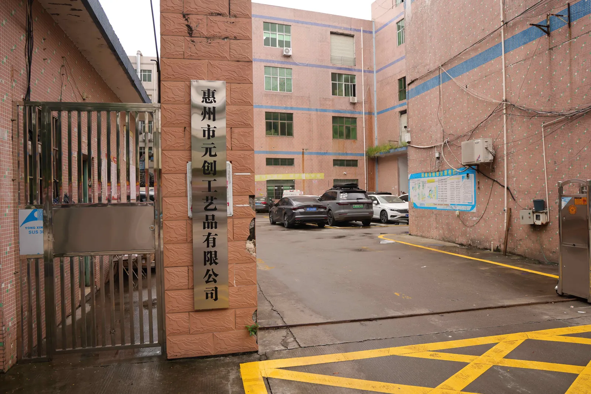

Insignias metálicas
Insignias metálicas personalizadas para uniformes, asociaciones, clubes, eventos y campañas de marca.
Fabricante OEM de metal
Producimos insignias metálicas personalizadas, pin metálico, pines esmaltados, medallas, placas y monedas con soporte de diseño, baño, esmalte, relieve, empaque y exportación para compradores B2B.
Catálogo principal
Usamos términos claros para que el comprador encuentre la pieza correcta: insignias metálicas, pines metálicos, medallas metálicas, placas de identificación y monedas personalizadas.
Insignias metálicas personalizadas para uniformes, asociaciones, clubes, eventos y campañas de marca.
Pin metálico personalizado, pines esmaltados y pins metálicos personalizados para solapas, gorras y merchandising.
Monedas conmemorativas, fichas metálicas y piezas de colección con relieve 2D o 3D.
Placas de nombre metálicas, gafetes personalizados y placas de identificación metálicas para equipos de atención.
Medallas metálicas, tokens promocionales y fichas personalizadas para carreras, torneos, hoteles y eventos.
Proceso de pedido
Trabajamos con marcas, organizadores de eventos, distribuidores y equipos de compras que necesitan piezas metálicas uniformes, resistentes y fáciles de reordenar.
Producción y capacidad OEM
Trabajamos con procesos de troquelado, relieve, baño metálico, esmalte, montaje, revisión y empaque para insignias, pines, medallas, monedas y placas personalizadas.

Revisamos arte vectorial, grosor de líneas y relieve antes de fabricar el molde para reducir errores en producción.
Controlamos baño dorado, níquel, acabado antiguo, esmalte blando, esmalte duro, impresión UV y epoxi.
Preparamos cierres, cintas, tarjetas, bolsas, cajas y separación por lote para exportación y reventa.
Cómo elegir el término correcto
En compras B2B conviene usar frases completas. “Insignia” sola es demasiado amplia; “insignia metálica personalizada” comunica producto, material y uso.
| Producto | Términos recomendados | Intención que cubre |
|---|---|---|
| Insignias | insignias metálicas personalizadas, insignia metálica, chapas metálicas | uniformes, clubes, asociaciones, eventos corporativos |
| Pines | pin metálico, pin metálico personalizado, pines metálicos personalizados, pins esmaltados personalizados | merchandising, solapa, gorra, regalos promocionales |
| Medallas | medalla metálica, medallas metálicas personalizadas, medallas con relieve | carreras, torneos, premios, reconocimientos |
| Placas | placas de nombre metálicas, placa de identificación metálica, gafetes metálicos | hoteles, tiendas, restaurantes, oficinas y atención al cliente |
| Monedas | monedas metálicas personalizadas, monedas conmemorativas, fichas metálicas | colección, fuerzas de seguridad, clubes, campañas de fidelización |
Muestras de fabricación
Relieve fino, esmalte limpio, bordes pulidos y baños estables son los detalles que separan una pieza promocional común de una insignia metálica profesional.
Guías de compra
Contenido práctico para elegir acabado, cierre, proceso y datos de cotización antes de fabricar insignias, pines, medallas o placas metálicas.
Compara textura, brillo, durabilidad y precio para pines esmaltados personalizados.
Leer guíaElige entre mariposa, goma, imán, broche de seguridad, alfiler o doble poste según el uso.
Leer guíaRevisa qué factores cambian el costo: molde, tamaño, material, baño, colores, empaque y cantidad.
Leer guíaDe la revisión del diseño al molde, baño, esmalte, montaje, control de calidad y empaque.
Leer guíaConsejos para hoteles, tiendas, seguridad, clubes y equipos que necesitan una imagen consistente.
Leer guíaGuía para elegir esmalte blando, esmalte duro, impresión UV, cierre y empaque.
Leer guíaPlanifica tamaño, relieve, cinta, categorías y empaque antes de producir por volumen.
Leer guíaMateriales, grabado, impresión, imán, broche y usos para equipos de atención.
Leer guíaDiseño de doble cara, relieve 2D/3D, canto, numeración y caja de presentación.
Leer guíaCompara baño dorado, níquel, cobre, acabado antiguo, esmalte blando y duro.
Leer guíaGuía para cotizar insignias, pines, emblemas y medallas personalizadas con entrega a México.
Leer guíaGuía para cotizar pines metálicos, pins esmaltados y pines con tarjeta para México.
Leer guíaCasos de fabricación
Ejemplos de proyectos para empresas, eventos deportivos, hoteles, colecciones y uniformes. Cada caso resume necesidad, solución técnica, especificación y resultado.
Pines metálicos para eventos corporativos, kits de bienvenida y regalos promocionales.
Ver casoMedallas metálicas con relieve, acabado antiguo y cinta personalizada para eventos deportivos.
Ver casoPlacas de nombre metálicas con imán para recepción, restaurante y atención al cliente.
Ver casoCotización OEM
Te responderemos con opciones de material, técnica, acabado, empaque y una estimación clara para fabricar tus insignias metálicas, pines o medallas.
Preguntas frecuentes
Un pin metálico puede llevar relieve, baño o impresión. Un pin esmaltado añade color con esmalte blando o duro dentro de áreas metálicas separadas.
Sí. A partir de tu logotipo preparamos arte técnico para troquel, esmalte, impresión o grabado, según el nivel de detalle.
Tipo de producto, tamaño, cantidad, material o acabado deseado, número de colores, tipo de cierre y destino de envío.